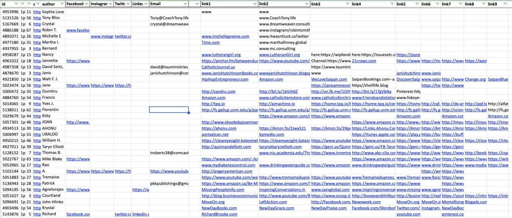

Telegram Bots: What They Are and How to Create One
Published on October 10, 2024
What do people use Telegram for?
A Telegram bot is a special account on Telegram that does not require a phone number to operate. Making a Telegram bot can help businesses automate customer support, manage communities, and send real-time updates.
For developers interested in creating a Telegram bot, the Python Telegram bot framework offers a simple way to build bots. This guide will explain how to use bots in Telegram and share proven methods for making a Telegram bot suitable for a range of applications.
How to Create a Telegram Bot

Creating a Telegram bot is relatively simple. Follow these steps:
- Sign in to Telegram and search for @BotFather — the official bot for creating bots.
- Start a chat with BotFather and use the
/newbotcommand to create your bot. - Choose a name and a username for your bot. The username must be unique and end with "bot."
- Once created, you’ll receive a token, which allows you to program the bot's behavior using frameworks like Aiogram, Pyrogram, or Telebot.
- Making a Telegram bot involves writing a script to process and reply to user messages. Most developers prefer using Python Telegram bot send message libraries like Aiogram, Pyrogram or Telebot. But you can also create your bot in JavaScript using Telegraf. To keep your bot running and responsive, you’ll need to deploy the script on a server. Be sure to include the token from BotFather in your script, which allows your chatbot Telegram to authenticate with Telegram’s servers.
To keep your bot running, you’ll need to deploy the script on a server and include the BotFather token for authentication with Telegram’s servers.
For a complete guide, check out my 1-hour video tutorial:

Video provides step-by-step instructions on getting a bot token, setting up Python on your PC, and uploading the bot to a server. Whether you're new to Telegram bots or looking for a refresher, this tutorial has you covered.
Best Telegram Bots Ideas That You Can Create
| Type of Bot | Key Advantages + Example | Key Drawbacks + Example |
|---|---|---|
| Telegram Bot for Youtube Download (TikTok, Instagram, Facebook) | Makes downloading videos easier. Example: YouTube downloader bot. | Might violate YouTube’s terms of service. Example: Blocked by YouTube API. |
| Telegram Bot for Business Updates | Keeps users informed of business trends and updates in real-time. Example: Tender notification bot for government projects. | Overuse of updates can frustrate users. Example: Business bot spamming users with irrelevant updates. |
| Scraper Bot with Python | Efficient at extracting and processing data from websites. Example: Scraping Amazon author details with python telegram bot example. | May face ethical or legal issues if misused. Example: Blocked by websites for scraping without permission. |
| Chatbot Telegram | Simplifies customer service and FAQ handling. Example: Python chatbot for hotel bookings. | Predefined responses limit handling of complex queries. Example: Can't handle multiple booking steps beyond FAQs. |
| Tele Chat Bot for E-commerce | Automates product searches and customer interaction. Example: Telegram shopping bot finds deals online. | Hard to keep updated with frequent site changes. Example: Bot breaking after a website changes its layout. |
| Chatbot Telegram for FAQs | Provides instant answers for common queries. Example: FAQ bot for hotel customer service. | Can't handle complicated or unexpected questions. Example: FAQ bot failing to respond to non-standard queries. |
| File Converter Bots (Telegram) | Converts files between formats, saving time and effort. Example: PDF to Word converter bot for document management. | Limited by file size or format compatibility. Example: Bot unable to convert large image or video files. |
| Telegram AI Bot | Provides conversational AI responses in chat. Example: ChatGPT-based bot for customer service queries. | Responses may be too generic or lack specific business knowledge. Example: Bot giving irrelevant answers to niche questions. |
| Crypto Trading Bots (Aiogram) | Allows users to trade cryptocurrencies automatically. Example: Aiogram-based bot for real-time crypto trading. | Vulnerable to market volatility and security breaches. Example: Bot losing funds during a market crash. |
How did I Scrape Amazon Using Python Telegram Bot?

One of my recent projects was with a client who found me on Freelancer.com. They needed help scraping Amazon Books author profiles to collect contact details like emails, websites, and social profiles for future outreach. To do Amazon web scraping I created a Python Telegram bot that was used to automate the process: GitHub link.
The first script, Amazon_a.py, starts by opening a browser and retrieving a proxy from the database. It then navigates to the Amazon Books advanced search page, applies filters like category, language, and year, and parses author profile links across 65 pages of results. The second script, Amazon_b.py, scrapes emails, Facebook profiles, and websites from the author "about" pages and stores the data in the database.
After 9 months of parsing and completing 5 million comparisons, I managed to collect nearly 90,000 author contact details. Using Neon Console's free PostgreSQL plan, which allows 500MB of storage, I could store up to 500k rows at a time. To continue the process, I had to regularly delete rows without emails or links to free up space.
Over the course of this project, I also encountered challenges with Amazon’s frequent layout changes (approximately every 3-4 months) and had to update the scraping script (usually I use XPATH to find text inside divs, p, a or headings) every time it happened, because without it - all parsing stops.
Additionally, before sending data to the client, I normalized parsed data, so in every cell there would be some useful link or mail, and not some gibberish text.
The most frequent issues I encountered were misspelled "https://" or finding nicknames like "@god_of_war" instead of actual emails. Sometimes, the email column would contain links to YouTube or TikTok profiles, as both platforms use "@" in their URLs. This improved the overall quality of the final data.
Conclusion: Data Quality and Maintenance Matter
The success of a project like scraping Amazon with Python isn’t just in creating a Telegram bot that can pull data, but in ensuring that the scraped data is clean and useful. Regularly updating the Amazon scraper Python code and normalizing the data was crucial to delivering accurate results. Whether you’re building a Python Telegram bot to scrape Amazon or using a Telegram bot list for automation, proper maintenance and adaptability to changes are key to long-term success.
Ask me anything?
Football Academy site example

Japalandia work abroad Landing Page

Model Agency site example